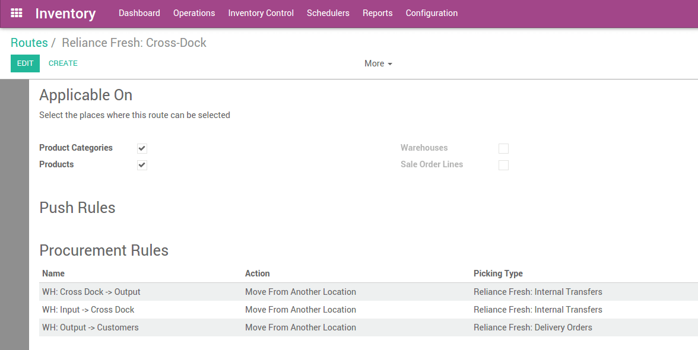

交叉转运区域是一个不存放产品的临时区域，只是用来管理把产品发给客户的地方。这会省掉很多仓库内部调拨时间以及存储过程。我们管理转运区域的产品，在那里产品直接从供应商处，只需要在我们的仓库过一下就直接发给客户。

注解
关于更多关于如何构架你的仓库，请参阅`交叉转运是什么以及它是否是和我？<https://www.yuancloud.com/blog/business-hacks-1/post/what-is-cross-docking-and-is-it-for-me-270>`_`
配置
仓库和路径
在**库存**模块下，打开：[UNKNOWN NODE title_reference]，然后在**路线**中选择**产品使用高级路线**，然后点击**应用**。
打开：[UNKNOWN NODE title_reference]，然后打开想要进行交叉转运的仓库并点击**编辑**。
在**仓库配置**页面，选择：
收货：先卸货在收货区域然后再进入库存(2步)
发货：直接从库存发货(直接出货)
点击**保存**

本步骤生成了一个cross-docking路径，你可以在以下地方看到 。
Cross Docking 路径
我们在第一部分使用**购买**路径然后其余部分创建一个路径。
每一个拉规则现在可以被配置。用内部的实体库位类型创建Cross Dock库位


使用cross dock的产品
我们创建蔬菜茴香产品并且设置刚才创建的路径以及**购买路径**。
我们可以指定一个供应商以及用于补充产品库存的最小库存规则。